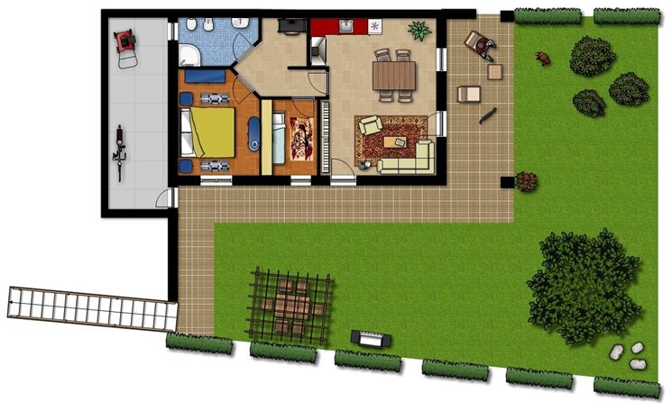

Le rappresentazioni planimetriche vedono la loro applicazione:
in architettura in cui si disegnano e si progettano le unità (residenziali, direzionali, commerciali), gli edifici, i quartieri, con gli edifici rapportati all'ambiente circostante;
in archeologia che individua le zone di reperimenti archeologici (carte archeologiche);
in astronomia che rappresenta in piano la mappa della sfera celeste e singole parti di essa;
nel disegno industriale per la creazione di oggetti, arredi, ecc.
vin geofisica e geologia dove su carte nella prima si delimitano e si analizzano le caratteristiche terrestri, di sismicità, magnetismo, vulcanologia e nella seconda le tipologie degli strati di terreno delle varie zone;
in geografia per la riproduzione in carte quotate di comprensori, province, regioni, ecc;
in ingegneria per la definizione di strutture edilizie, di strade, di ponti ecc;
in meccanica per la rappresentazione planimetrica di macchine ed utensili di vario genere;
in topografia dove si studiano l'andamento dei terreni e se ne stimano le misure,(planimetrie catastali);
in urbanistica, nella quale si definiscono le destinazioni dei vari territori e si progetta l'ambiente costruito;
Il disegno in piano dello spazio o della superficie irregolare di un territorio, di un fabbricato o di un oggetto, consente di valutare le loro dimensioni rispetto ad altri elementi e determinarne quindi la grandezza. Collegata alle altre rappresentazioni di sezione e di prospetto, specificatamente negli oggetti di minore estensione, rende misurabile anche il volume.
